monokotoのあゆみ 1カ月単位くらいで随時更新していきます！！
更新日2019/8/4
team Labさん（デジタルアート）が山陰初として、米子市美術館に来たようでmonokotoの活動理念に似た側面があるので息子と行ってみました😊
1枚目の写真の言葉にあるように、これからの時代に必要な考え方"共創"
monokotoも同じように"共創"を実践していきます👍
チームラボについては以下をご覧ください😆
今日は、出雲市稗原コミセン&子供会でのmonokoto出張工作でした😆👍
ほんとにたくさんの笑顔に出会えました😊🍀
慣れないことで、大変だったけど、できたとき、頑張ったと言えたときの感動は、いつだって最高だぁあぁ‼️‼️
子どもたちの好奇心の芽生えに貢献できれば有難い限りです😊✨
稗原コミセンのみなさん、子供会のみなさん、お世話になりました🙏
機会を与えていただき、ありがとうございます🙏
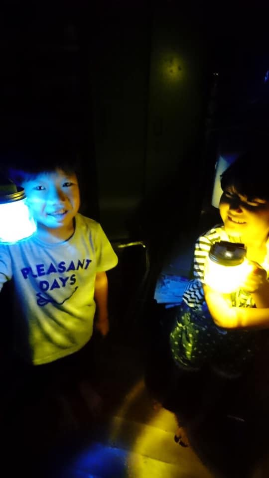昨日のmonokotoは、まだやったことがない子もいたので、スピーカーを作りました😆‼️‼️
エナメル線からコイルを巻くのが、なかなか大変だったけど、なんとか完成しました🎵👍
接続して、スピーカーから音が聞こえたときの感動が最高でした😆‼️‼️
第2部は、安定の学び合いで、みんなそれぞれに賢くなったようです👍
次も頑張ろう🎵✨
8/18（日）に新店舗にて、夏休み向け工作教室を開催しまーす😆
以下が時間割になります😆
夏休みの自由研究や工作にお困りなら、こちらでサクッとやっつけちゃいましょー 笑
①ランタンを作ろう！10時〜11時30分
②スピーカーを作ろう！11時30分〜13時
③お魚浮き子を作ろう！13時30分〜15時
④お掃除ロボットたわし号！15時〜16時30分
⑤ダンボールカーを作ろう！16時30分〜18時
（イメージは写真をご参考にしてください😊）
定員；各工作につき5名まで
料金；1500円（材料費込）
参加ご希望の方はコメント欄にありますまいぷれさんのリンク内のLINEもしくは、お電話にてお問い合わせください😊
facebookでメッセージが送れる方は、金山でも有田でも直に連絡ください😊
先着順になりますので、ご了承ください😊
今日はついに新店舗での開催😆‼️
まずは第2部勉強会から開催してみました🎵
楽しすぎて、"泊まりたい、帰りたくない"ってなってました😆
ぜひ遊びに来てくださいね🎵
先日の金曜は、待望のやまちゃん企画😆‼️
なんと‼️"掃除機"を作りました🎵
今回は、新しい家族が2組来られて、慣れない電子工作やドリルに奮闘しながら、頑張ってつくりました😆👍
そのあとは花火して、公園で遊んで、楽しかったね🎵来てくれてありがと😊✨
第2部は、夏休みなので、気を緩めず、しっかり勉強しましたよー👍
も頑張ろう‼️‼️
まいぷれさんイベントに参加してきました‼️‼️
先日の金曜に工作練習をして、土曜は、まいぷれさん主催の素敵な親子イベントに出店しました😆🎵
たくさんの親子さんが来られて、monokotoの子どもたちは、自信をもって教えていました😆👍
子どもたちの社会性向上を目的にイベント出店していますが、終わったあとは、みんな達成感のある笑顔でした🎵
また、科学工作をした子どもたちのキラキラした目にもたくさん出会えました😊✨
心の豊かさってこういうことなんですよね🍀
まいぷれの、のりこさん（Fukushima Noriko）、機会を与えていただき、ありがとうございました🙏✨
8月は、またイベントがひかえています😆👍
さぁ、また頑張るぞ‼️
いよいよ明日となりました😊‼️
有名な"まいぷれ"さんが開催するイベントにmonokotoも出店します😆
まいぷれさんとともに繋がりを増やし、地域を元気にできたらなぁとの思いです🍀
明日、10時から15時まで、大社駅となり&mariageさんで開催しています😆
ぜひお越しください😊
詳しくは、リンクをご覧ください‼️
島根のブログで有名なトリセツシマネさんに我が子が載りました 笑
monokotoのことも紹介頂き、ありがとうございます‼️‼️
【コトリエット内39+、オープン‼️】
パンケーキ、最高でした‼️‼️
ついにオープンしましたダイニングカフェ39+😆
monokotoもイベント予定です🎵
雲南市のみしまやのとなり複合施設コトリエット内です🎵
ぜひ、お越しください😆
今日は、第2部の日曜勉強会でした🎵
みんなそれぞれに教え合いながら、4時間近く、がんばりました😆‼️
本当に家族みたいになってきて、昼は、みんなで回転寿司を食べにいきました 笑

【磁力で触れずに水を混ぜる】
先週の金曜は、マグネット撹拌器を作りました😆‼️
なかなか難易度の高い工作でした😱
固定しながら、ビスを打ったり、接触しないように調整したり、、、
なんとか完成して、コップの中に渦ができた瞬間、"うぉおぉー"っと歓声🎵
けっこう盛り上がりました😆👍
第2部は、安定の学び合いで、深夜近くまで、みんながんばりました‼️‼️
第2部の勉強会
みんな昨日も頑張りました😊あちこちで学び合いがあり、この空間を"日常化"することが大切なんだと改めて思いました😊
やる子は、結局1時まで頑張りました👍
言われてやる勉強より、自分から学びたいと思えたとき、将来への道が、本当の意味で開かれるのだと思います😊
邪魔しないように、空間づくり、頑張ります‼️
この金曜は、ブザーでイライラ棒&鬼ごっこでした😆‼️‼️
新しい子がだいぶ増えて、大人気イライラ棒をやってない子がほとんどなので、久しぶりにイライラ棒作成👍
穴あけ、半田づけ、配線、回路、様々な要素を克服して、自分だけのオリジナルイライラ棒😆🎵
みんな個性ある作品ができました👍
そのあとは、汗だくの鬼ごっこ😆 笑
大人も子どもも汗だくで本気鬼ごっこでした😱
第2部は、少し人数が少なかったけど、それぞれの課題をみつけながら、学び合いもありながら、勉強しました😊📖
また次も頑張ろう👍
昨日は、待望のやまちゃんday‼️‼️
スタッフのやまちゃんが、月一で頑張ってくれる企画です😆🎵
今回は2足歩行ロボット🤖
新しい子も見学にきて、盛り上がりました‼️‼️
なかなか前に上手く進まなかったけれど、微調整を繰り返し、みんな上手くできました😆😆😆
今日は島大生2人も見学にきてくれました😊
僕も島大生のときに、熱い思いをもって子どもの活動をしていたので、なんだか感じるものがありました🍀
第2部は、みんなやる気で、結局、2時くらいまで頑張る子は頑張ってました 笑
新しく来た子も慣れたみたいで、笑い声が絶えない勉強会です‼️‼️
なんて美しい光景なんだろ。
いろんな背景の親子がいるのだろうけど、やっぱり"家族"
"親が子に教える"
当たり前の風景が、当たり前ではない社会があるのかもしれない。
当たり前を大事にしたい。
家族、親子、やっぱ、いいね😆‼️
最高😊
本日は初monokoto開放day‼️
テスト前に約4時間くらいぶっ続けで勉強しました😆💪
遊ぶ子も勉強したい子も一緒になって楽しみました👍
双子の赤ちゃんも遊びにきて、テンションMAX😆
ホント、大家族になってきた‼️‼️
みんなでワイワイ、勉強って、ほんと、楽しいよね👍
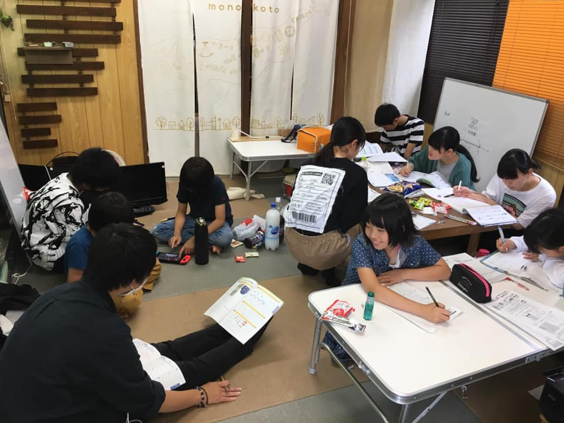この金曜も盛り上がりました😆‼️
第1部は、『炭酸ジュース作り&キャンプでも活躍する電子工作ランタン作り』
第2部は、『わいわい学び合い&牛丼』
炭酸ジュースは、中和反応を利用して、身近な材料からしゅわしゅわっと作りました😆
酸っぱすぎるのもあったり、甘すぎるのもあったりといろいろでしたが、盛り上がりました😆
ランタン作りは、LEDを半田付けしたり、穴あけしたりと、少し難しめでしたが、試行錯誤しながら、光の散乱をテーマに科学しました👍💡✨
第2部は、みんなすごく仲良くなっていて、安定の学び合い😊テスト前なのもあって、お尻に火がついて頑張ってました👍📖
そのあとは、頑張ったご褒美に、みんなで牛丼♫
12時くらいまで勉強をよく頑張りました😆
今日は、初のmonokoto開放day‼️
テスト前なので、monokoto部屋を開放して、みんなの学び合いスペースにしまーす😆
ほぼすべての子どもたちが遊びに来てくれるようで、楽しくなるぞー😆‼️‼️
この金曜も盛り上がりました😆‼️
重曹やお酢を使った二酸化炭素爆発を3つやりました 笑
風船爆発がやっぱり一番盛り上がって、みんなお酢まみれ 笑
キャーキャー言いながら逃げました😆‼️
そのあとは、本気の女子vs男子鬼ごっこ🤩
大人も子どももみんな汗だく、夢中でした 笑
2部は、新しい子も来て、ワイワイ楽しく勉強しました😊
やる子は、気づいたら1時過ぎまで勉強してました😱
勉強、楽しいよね😆
今週は、第2部開催を火曜、水曜、金曜の予定にしています😊
昨日もたくさんの学び合いで盛り上がりました😆👍
頼られた上級生や同級生は、分からないなりに、頑張って説明しようとしてます😊
"人に伝え、教えること"は、単純にコミュニケーション能力を高めるだけでなく、教える側の学習にもなります😊
どんどん学び合っていこー👍
monokotoについて、様々な方に説明する機会が増えてきたので頭の整理も兼ねて、monokotoでやりたいこと、絵にまとめてみました😊
1枚目 "心の豊かさ"へ、どうアプローチするか
2枚目 日常的な"つながり"、"学び合い"の重要性
始めたころから、この考え方は変わっていません。まだまだこれから頑張らなきゃ💪
昨日も盛り上がりました‼️😆本当に家族みたい 笑
1部のものづくりは、プーリー機構のモーター船⛵️
そのあとに、お世話になってる美容室オーナーさんの奥さんえりちゃんの誕生日会🎊🎂🎊
2部の勉強会は、約10名くらいで、学び合いがたくさん😆
monokotoが始まって約1年が経とうとしてますが、本当に"大家族"になってきました😊‼️
理解ある雰囲気の中で、みんなで子どもたちを育てていく😊
人間関係が希薄になりつつある現代では、難しい、この"長屋、下町的"な雰囲気。
いろんな繋がりの中で、いろんな目線から子どもたちを見守ってやりたい😊
まだ1年しか経ってないんだ、もう3年くらいやってる気分😅
密度が濃いってことですね👍
まだまだ頑張りますよー💪
今日も第2部開催で、遅くまで、みんなよくがんばりました😆👍
不登校の子がいますが、第2部で腰を据えて学んでいくなかで、徐々に自信がついてきたみたいで、"学校に行って数学にチャレンジしてくる"
って声をききました👍
勉強ってやらされるものではなく、自分からやりたいと言えることなんだよね‼️
いつの時代も、"やりたいから、やる"
それが大切‼️
大人になるまでに、たくさんの"やりたいから、やる"を見つけてほしいと願っています😊
その可能性のお手伝いができることに感謝しながら、、、
さぁ、僕も"やりたいから、やる"を探し続けます👍
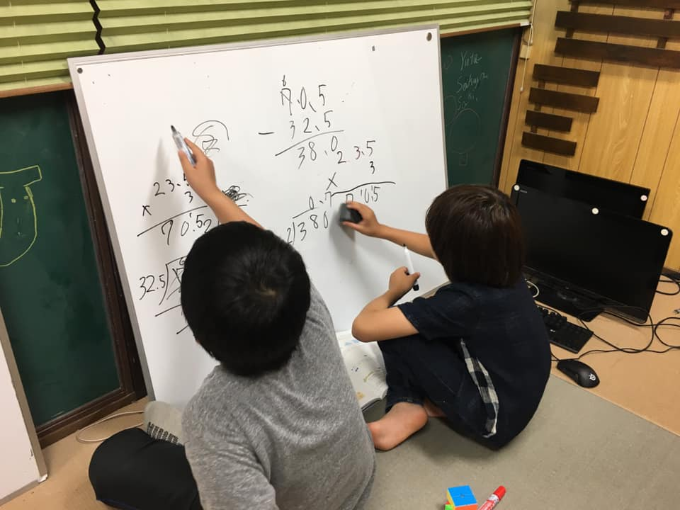学ぶこと、分かること、本当に楽しいよね‼️
今日は結局、0時半くらいまで、みんな勉強してました 笑
最近の2部は、学習の定着を目的に、週3回行うことにしています
上の子が下の子に教え、また、同級生との間で議論しながら、進んでいます
不登校の子もいますが、"学ぶこと"、"分かること"の喜びに触れて、楽しくてしかたないようです
将来に対して希望をもつことの手助けができるなんて嬉しい限りです

今回は待望のやまちゃん企画
スタッフのやまちゃんが考えてくれた水に浮くマーカー金魚と振動を回転に変えるガリガリ君をつくりました
木枠のプールに、マーカーで書いた金魚が浮く⁉️
夢中になってたくさん書いたね 笑
ガリガリ君は、みんな思い思いに好きな絵を描いて見事に回転に成功しました
今回は見学に来てくれた門脇 碧衣ちゃんにお世話になりつつ、楽しく活動しました
見学にきてくれてありがとう
2部は新しい子も来て、小さな学び合いが自然発生的にできていて、3時間近くがあっと言う間でした
学びたいと言う意欲が自然と生まれるなんて素敵ですよね
昨日は、monokoto懇親会&キャンプでした‼️
monokotoは、みんなで子どもたちの将来を、"大家族"になって考えていきたいと思い立ち上げた団体ですが、大人も子どももワイワイ、大家族みたいでした
忙しいのに集まってくれてありがとう
ビリビリ科学実験も成功したし、よかった 笑
近いうち、またやりまーす
昨日、おとといと、第2部では、中間テスト対策をしています
深夜に近い夜遅くまで、ワイワイ楽しく、また真剣に勉強に取り組んでいます‼️
わからなかったところが、わかるようになって、実は意外と難しくないじゃんってことがわかってきたみたいです
そう、本質的に頭の悪い子なんていないんだよ
いつの時代も"やるか、やらないか"ただそれだけ
やれば道は開かれる
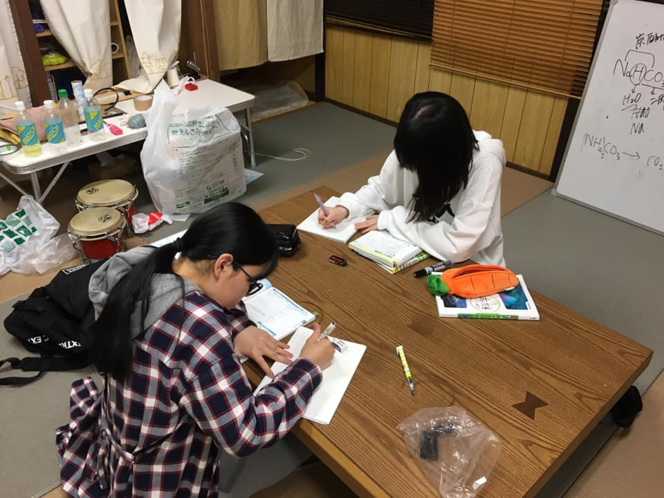昨日は、棚田フェス出店でした
すごいいいお天気で、外でのびのび出店しました
子どもたちは、バンドにも出たし、数組のお客さんに自信をもって教えることができました
棚田という大自然の中、たくさん遊んだね
棚田カフェの永瀬さん、ルナさん、棚田フェスの関係者の方、機会を与えていただき、ありがとうございました
今週末は、monokoto懇親会とキャンプです
また"大家族"で楽しもう
明日、monokotoが出店する棚田フェスです‼️‼️
再度、リンクをシェアします‼️‼️‼️
棚田で最高の時間を過ごしませんか
https://www.facebook.com/events/402267236996225/
今日は見学の方が数名こられて、さらに盛り上がりました‼️
第1部のものづくりでは、この日曜日に棚田フェスがあるため、その出店のための工作をしました
紙でつくるゴム動力紙トンボを作りました
難しいとこもあったけど、いろんな人に助けられて、学び合いの中でなんとか作り終えました
残り時間は、みんなで鬼ごっこをしたよー
第2部は、小学生から高校生まで、ワイワイ楽しく勉強しました
たくさんの学び合いがあり、いろんな疑問も解決できたようです
勉強が終わったあとは牛丼食べて、最高の笑顔 笑
学ぶって楽しいよね
今日の内容は以下でした‼️
比例
反比例
イオン、電気分解
受動態
多項式、展開、因数分解
今回は、松江で理科教室を開いておられる、SUN in サイエンスさんが来られました
非常に楽しい試みをされてるので、何かコラボできたら面白いなぁと思っています
来ていただきありがとうございました
実は同じ大学の後輩だとわかり、びっくり 笑
https://peraichi.com/landing_pages/view/suninscience
【小学生から高校生まで、学ぶのが楽しくて、21時過ぎに開始したのに、終わりは0時前、あっという間の2時間強】
monokotoは2部構成で、1部はものづくり、2部はテスト対策や受験勉強をやってます
1部のお話ばかりしてましたが、2部の勉強がとても大切です
中間テストが近いということで、2部の開催日を増やしました‼️
小学5年〜高校生までいますが、異世代の学び合いで、今日も盛り上がりました
1部での具体的なものづくりを通した"もの"の本質から、2部の抽象的な勉強がつながり、本来の楽しい学びが自然発生的にできてきて、嬉しい限りです
勉強って本来楽しいはずなんだよ
やらされる勉強じゃなくて、やりたい勉強だ‼️
みんな仲良くなりすぎて、ほんと家族みたいだ
今日の内容は以下でした！
比例
グラフ
文章題
英語 受動態、構文
式の展開、多項式
因数分解
昨日は、ビスマスの金属結晶を作りました
なんだー、これ
なかなかお目にかかることはないであろうビスマスという金属
僕が大学で結晶の物理を専攻していたこともあっていつかはやりたいなぁと思ってた結晶作り
ミョウバンとか食塩とかは、よくあるので、ここは、珍しいビスマスでもやってみようということで、結晶を作りました‼️‼️
ビスマスは、通常の金属としては、融ける温度が低めなので、ガス火でとけちゃいます
ドロドロの中から、なぜか幾何学模様が現れる⁉️
なんでだー‼️‼️
色の発生原理も面白いビスマス結晶を作っちゃいました
子供らも大はしゃぎで砕いたりしてました 笑
さぁ、次も楽しもう
この火曜は、真空ポンプを作りました
真空ポンプなんて作れるのか⁈
吸入弁と吐出弁を作って、1方向の空気の流れをつくれば、よくある注射器でできちゃうんです
真空とは何か？大気圧とは何か？
マシュマロいれたら、大きくなっちゃった 笑
蓋がとれなくなるなど、みんな予想以上に盛り上がりました
真空内に、スライムを入れようとして、シェービングフォームでフワフワのスライムを作ったり、いろいろ楽しかったね😊
親さんは、真空とは何かで議論が盛り上がりました 笑
科学ってやっぱり面白い！！って改めて僕も思いました
マシュマロが膨らむ理由をあんなに真剣に議論できちゃうなんて、面白いよね 笑
さぁ、次も遊び、学ぼう
先週の金曜日は、新しい子も何名か来たので、みんなが盛り上がれる
科学工作の王道"ポンポン船"
を作りました
ブリキに穴を開けたり、銅パイプやアルミパイプを曲げたりして、かわいいポンポン船になりました
できた後は、プールもみんなで作って、火をつけて、ポンポン走ったよー‼️‼️
何で走るのかその原理をみんなで考えたり、親さんたちも考えました
熱、大気圧、いろんな現象が背後にあるけど、楽しかったね
わりに公園で走り回って、それも楽しかったね
さぁ、次も遊び、学ぼう
チラシができました！！
昨日は、久しぶりに火起こし&べっこあめ作りでした
第2部では、新しい子も来て勉強しましたよー
火起こしは、やんちゃグループと、ありちゃんグループに分かれて開始
ありちゃんグループは、確実に火をつけて、べっこあめ作成成功
やんちゃグループは、なかなか火がつかず、最後は、文明の力を取り出してきて、べっこあめを食べてました 笑（←もうちょい頑張れよ 笑）
失敗してもいい、また挑戦すればいい、その過程を楽しめる人になれれば、どんな人生も楽しいよ
第2部は、なんで勉強しなきゃいけないかも含め、いろんなことを話しました
来てくれてありがとう
さぁ、次回も遊び、学ぼう

先日の日曜は、monokotoとして、棚田カフェさんの2周年イベントに出店してきました
子供たちは、青いユニホームを来て、会場にきた子たちに、科学工作を教えました
約10組くらいは、お客さん来たかな
よくやった‼️‼️
月1くらいで、こんな教えるイベントができたらなぁと思っています
次回は5/12 棚田フェスに出店します

先週の金曜は、砂鉄スライムを作りました
まずは、お札のマジックから
磁石を近づけると触ってないのにくるくる回り出す
不思議そうにしてましたが、そのうち、インクに磁性体が入っていることに気づき、みんな楽しそうでした
そのあとは、砂鉄を使って、動くスライムを作りました
磁石を近づけると、ムニュムニュ動き出す
今回は、やまちゃんに企画をやってもらいました
やまちゃん、サンキュー
次もまた頼むね

雲南市桜まつりmonokoto出店、終了しました
2日間で約35名の親子に科学工作をしてもらいました‼️
輝く笑顔にたくさん出会えたことに感謝です
15分に1組ペースの対応でしたが、できるだけ丁寧に科学の楽しさ、その背後の本質について話せてよかった
雲南市のスタッフの方にもお世話になりました
ありがとうございました
昨日は、雲南市の桜まつりに出店してきました‼️‼️
人、人、人で、大盛況でした
約10分に1組ペースで、工作したい子どもたちが来て、ワイワイ楽しく科学工作をしました
外では3Dプリンタも動かしてたので、大人も子どもも、"何だこれー"って興味津々でした
雲南市のfacebookにもmonokotoの写真がアップされて嬉しい限りです
今日も10時〜15時まで出店です
お天気が気になるけど、遊びに来てくださいねー
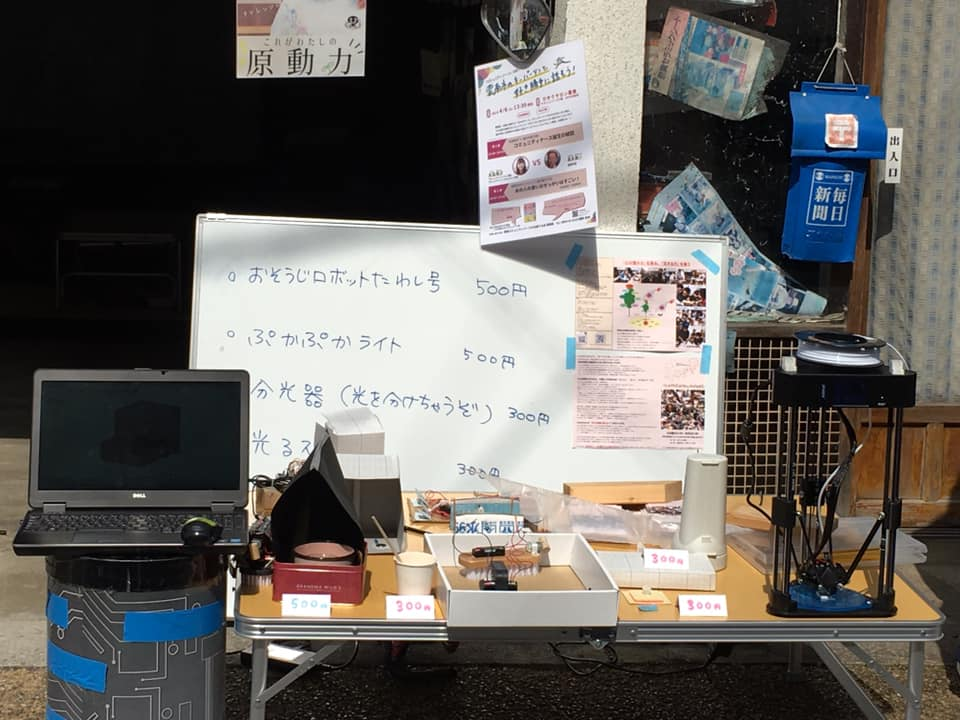monokotoも少し認知度が上がってきて、ありがたいことに、各方面からイベントのお誘いがきています
以下、ものづくりイベントをする予定です
4/6、4/7 雲南市桜まつり チャレンジコーナー
4/14 棚田カフェ様2周年イベント
5/12 棚田フェス
それぞれ特色ある楽しいイベントばかりです
一部子どもたちも参戦します
ご興味ある方はぜひ
更新が遅くなっています
先週の金曜は、光を分ける分光器と、光を混ぜる混色器を作りました‼️
光を分けるってどういうこと⁉️
分光器を覗いてビックリ
電球や蛍光灯、LEDライトなど、白色系に見えますが、実は様々な色の光が混ざって目に届いているのです
なんでーっといいながら、いろんな光を観察しました
蛍光灯の光は、虹色が連続的じゃなく、何本かに分かれて見える
不思議だねー
光なんて当たり前かもしれないけれど、実はその背後に様々な原理があるんだね
さぁ、また次回も本質を探そう
先日の火曜は、電池をつくりました‼️
電池を作るなんて、考えたこともなかったのか、すごく夢中になって作りました
身近なものを使って、化学反応をさせて物質の中の電子くんを取り出す
テスターで測って何ボルトだろうと確認しながら実験しました
最後に電子オルゴールが、弱かったけどかすかに鳴ったとき、感動だったね
市販で売ってる電池がすごいってことがよくわかったね
ちなみに今回は、イベント用monokotoTシャツも出来上がったので、みんなで着て、実験しました 笑
さぁ、今日も遊び、そして学ぼう
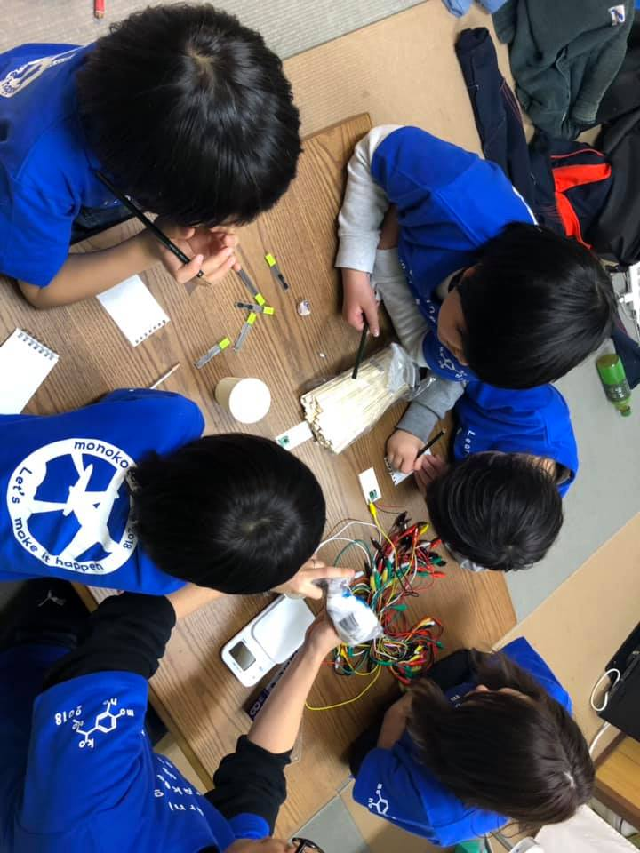先日の金曜は、コントローラ付きギヤミニ四駆作製に挑戦しました‼️
ギヤは3Dプリンタで造形したものを使い、組み立てていきましたが、すぐ回る子や大人もいれば、なかなかうまく回らないこともあって四苦八苦しました
コントローラ部までつくれたのは、一部の子だけだったけど、また挑戦しよう
新しく来た子も、動いたことにすごく感動していて、楽しかったみたいで良かった
第2部は、ゲームプログラミングの話の中で論理力について話しました
数学を学ぶ意義につながる大事な話に、ワクワクしていたようです
さぁ、次回も遊び、学ぼう

公式に発表されていますので、お知らせします！
4/14（日）、雲南市の山王寺の棚田にて、カフェを営む"棚田カフェ"さん2周年記念イベントにmonokotoも参加します
ものづくり教室にて参加予定です
音楽イベントなど盛りだくさんです‼️‼️
ご興味があればぜひ、来てくださいね
ご質問などあればお気軽に
先日の火曜は、ロボット作りを頑張りました
今回は、僕も小さいころお世話になっていたタミヤのギヤボックスの組み立てから
これがまた難しい
ギヤが4つくらいあって金属のスペーサーをいれたり、シャフトに歯止めをいれたり、、、、
説明書は立体的になっていて、あーでもない、
こーでもないと言いながら、諦めてはまた再開しを繰り返し、なんとかギヤボックスが出来上がりました 笑
実はこの時点ですでに終了の時間に近づいていたのでした 笑
分からないながら、みんなよく頑張った
残り時間はお決まりの夜のサッカー対決
第2部は、違う雰囲気で、親さんともによく勉強しました
さぁ、今日は新しい子が来る予定だぁ
遊び、そして学ぼう
先日の日曜に、プレーパークと呼ばれる冒険遊び場にmonokotoのメンバーも一緒に参加してきました
プレーパークは、子どもの居場所作りの一環として、子どもたちが自分の責任で自由に遊べる場を目指しています。（←私の理解です）
子どもの本来の姿、輝いた目に出会える場で、僕も学生時代にスタッフとして参加していました
松江市では、何箇所かでプレーパークを実施しているようですが、今回はかんべの里で行われているプレーパークに参加しました
素晴らしい試みなので、monokotoでも立ち上げていきたいと考えています
岸さん、かいちゃん、おつかれ様です
ありがとうございました
また遊びにいきます‼️
僕たち大人や子どもたちは、寒いのにビショビショになって遊びました 笑
風邪ひかないように
 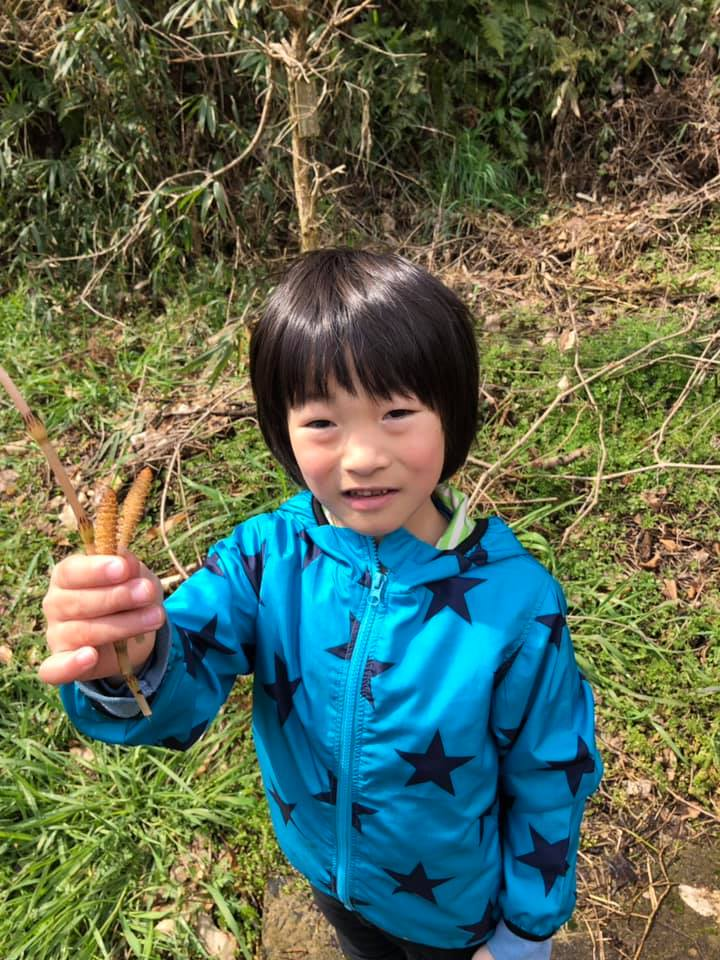
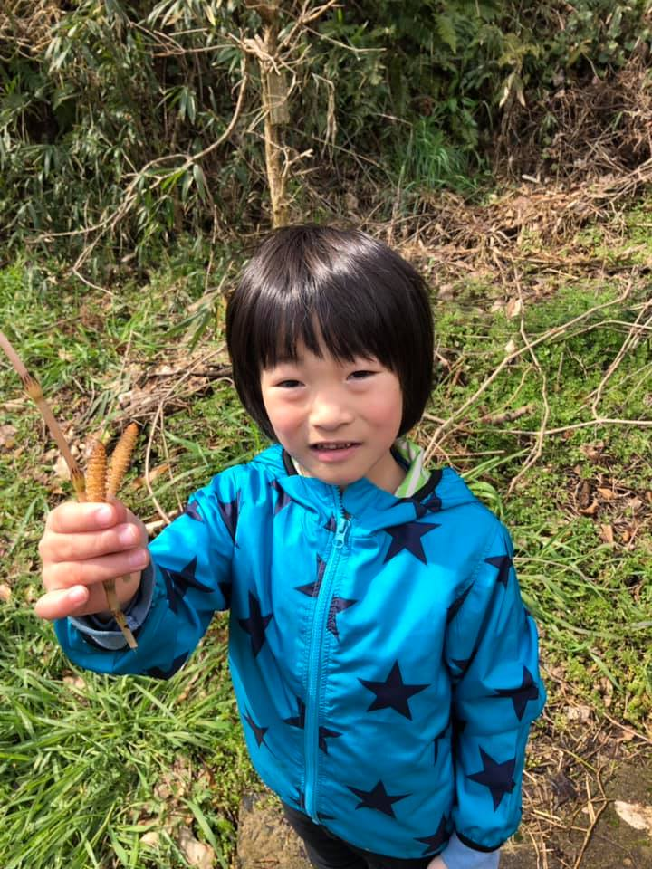こんなロボット作ってみました！
これもまた次回以降の工作でやりまーす
先週の金曜は、みんなで作ろうとずっと思っていた靴箱を作りました
あまり大きすぎるとスペースをとってしまうので、斜めにしたり工夫をし、必要な板をみんなで切り出しました
その間、靴箱の図形に関連して、先日高校入試で出題された問題について考えたり
第2部では、親さんも一緒になって、中学数学にチャレンジし、子どもが親に教える姿に出会えました 笑
人に伝える、教えることで、自分もより深く理解できたようです
昨日、連絡があり、第2部で高校入試対策を行っていた子が第一希望の高校に無事に合格しました‼️‼️
その子の人生を創る活動ができたことに、嬉しく思います
ご報告しておきます
今回は、物理計算から木琴作製をしました‼️‼️
ホームセンターでも売っているような木材を使って、出したい音階に合うように木材を切り出します
ざっくり計算して切り出したら、周波数解析をして、どんな音が鳴っているか実験し、
あと5mmだ！
あと2mmだ！
と言いながら、長さを調整していきました
なかなか精密な作業だったので、ドレミの3本しか作れなかったけど、また挑戦すればいい
そのあとは、公園で本気のサッカーをしてクタクタになるくらい遊びました
明日はmonokotoだ！
遊び、学ぼう

物理計算から木琴を作ってみましたー♫♫♫
振動の理論を駆使し、実験と計算を繰り返しました
木琴の工作も今度やりまーす
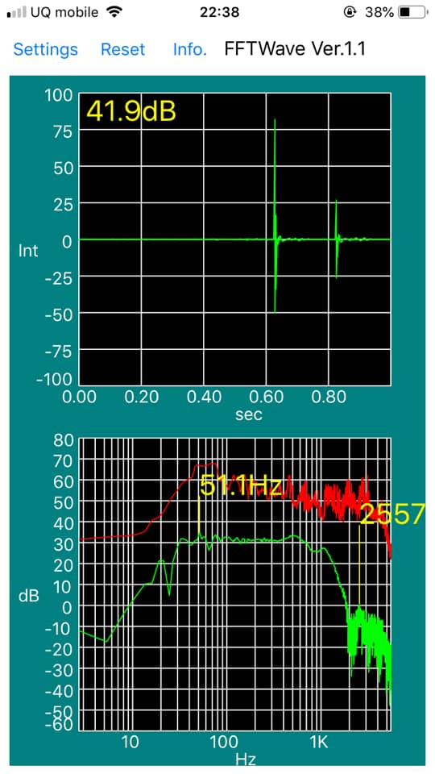今回は、たわしバトル&サッカーでした‼️‼️
モーターの回転を偏心させることで、振動をおこし、その力をたわしの毛に伝え、たわしを動かす 笑
動画をみてもらえば分かります 笑
みんなそれぞれに、電圧や形状、モーター数を工夫してたわしバトルに勝つために作りました‼️‼️
そして大人VS子どもをしましたが、見事に子どもが勝利 笑
携帯の中のバイブレーション部品も分解しながら、振動を利用して遊びました
企画、準備を頑張ってくれたやまちゃん、サンキュー‼️次も期待してるよ
のあとはいつもの本気のサッカーをして、第2部では、新たな子も入ってきて、一生懸命勉強しました
さぁ、次は何して遊び、学ぼうかな
今回は、コマの実験と、サッカーをして遊びました
コマの実験では、慣性モーメントと呼ばれる回転を表す量に注目して実験をし、その結果から、よく回るコマはどんなコマかそれぞれで作りました
重さの配置によって回り方が変わります
それぞれに自分なりのコマを作ることができました
みんなでサッカーをしましたが、ボールが沼に何度も落ちて、また拾って、それが面白かったりして 笑
第2部では、新しい子が学びに来てまして、親さんも中学数学を学びながら、議論しながら楽しく勉強しました
すごくいい親子関係に、微笑ましく思いました
明日もmonokotoを開催します
大人VS子ども企画ができたらなぁと考えています
さぁ、次も遊ぼう
今回はピタゴラスイッチならぬ、モノコトスイッチを作りました‼️‼️
そのあとは、大人VS子どものペットボトルサッカー
磁石を使ったり、ボールを使ったり、ストロー使ったりして、思いつくままみんな熱中して作りました
家を作ろうとしてあきらめたグループもあったけど 笑
ボールがうまく入ったら歓声が上がったり、上手くいったときの動画撮影が始まったり
まだまだ完成じゃないけど、また次回以降もやりたいと思います‼️‼️
そのあとは、大人VS子どものペットボトルサッカー
激しいぶつかり合いや、抗議の嵐で、ワイワイやりました 笑
やっぱり本気は楽しいね
寒いはずなのに、みんな汗だく 笑
さぁ、次は何するかな？
この写真に全てが詰まってる気がする。
"好奇心"
"大人の本気"
抱き合い、涙を流す
今朝、宇宙探査機はやぶさ2が、小惑星リュウグウに着陸しました！！
また新たな宇宙探査の歴史が始まりますね
開発メンバーの苦労は計り知れない
今回は夕日、青空を作りました‼️‼️
そして、親さん含め、
大人VS子どもの本気の缶蹴り
電子レンジの熱量計算もしました‼️‼️
夕日、青空を作るなんてどうゆうこと⁈
から始まり、光の散乱をテーマに見事に作りました（動画を見てください）
そのあと、中学生の子が増えたので、大人VS子ども企画として、電子レンジに入れたら水の熱量計算をしました
中学生がまじめに議論し計算するなか、大人の回答は、、、
"意外と早くあたたまる" 笑
テストだったらバツになるやつですね 笑
そして第二弾で、大人、親さん含め、大人VS子どもの"夜の本気の缶蹴り大会"
大人が本気になれば、子どもは自ずと心を開く
今の子どもたちは、どれだけ大人の本気に出会えているのだろう？
さぁ、次は何するかな？
今回は、みんなでCDプレーヤーを分解したあと、大人VS子どもで、本気の缶蹴りをしました 笑
分解は、ラジオもついてるCDプレーヤーだったので、コイルやコンデンサがついてることがわかったり、CDのフタがゆっくり上がる構造や、CDのレーザ部分、回転部分など、じっくりと分解しました
残り時間は、大人と子ども、本気になって缶蹴りをして、ハーハー息が切れながら、大はしゃぎで遊びました 笑
やっぱり、大人が本気で遊ぶことの大切さ
ただそれだけで子どもたちは心を開いていく
現代社会では、多忙さからなかなかできないことかもしれないけれど、子どもたちの幸せのために、大人が変わっていかないと、親が変わっていかないと、、、
さぁ、次は何するかな？


今回は、トースターを使って焼き芋の科学と、プラ板遊びをしました
焼き芋のアミラーゼくんの化学反応に注目して、最高の甘みを出すにはどうすればよいか、さつまいもの中心部を温度測定して、甘さを確認しました
平行して、バナナも焼いて、甘くなることも確認してみたよ 笑
バナナは特に見た目が真っ黒だったから、えーって感じだったけど、食べたらめちゃめちゃ甘くてびっくりだったね 笑
焼き芋も甘さがすごく際立ってました
そのあとは、トースターでプラ板をつくって遊んだね
みんなそれぞれに個性あるプラ板ができました
さぁ、次回は何するかな？
また遊ぼう


今回は、再度チーズの科学と、コヒーラーとよばれる無線の科学を実験しました
チーズは、前回参加できなかった子もいるので、再度挑戦
重量計で計って、混ぜ合わせて、ろ過して、うまく作れました
その後、無線の科学、コヒーラーを実験して、マジックのようにLEDが光ることに、みんなすごく不思議に感じているようでした
数百年前に、まだ電波とは何か今よりよく分かっていなかった時代に、遠く離れた場所にどうやって情報をおくるか
多くの偉人たち努力の上に、今の豊かな暮らしがあることが分かる実験でした
その後は、ゲーム開発したり、夜の鬼ごっこをしたり、ポップコーンを作ったり楽しかったね
また次回も遊ぼう


今回はチーズの科学を研究しました
いろいろ用意はしていったものの、今回、みんなが夢中になったのは、チーズの科学実験でした 笑
牛乳に酸となるレモン汁を加えていくと、コロイド溶液だった牛乳のタンパク質が変性し凝固を始める。
小さな原子や分子の世界では見えないけれど、配列が劇的に変化している
実験のあとは、いろんなものにのせておいしく食べました
気づけば、今日もmonokoto開催日
さぁ、頑張ろう

今回もいろんなことをして学びました
まずはみんなで料理の科学
〜グミをつくろう（ゼラチンの科学）〜
ゲーム開発
家の自動ドア化
、、、
料理の科学では、おいしいものからマズイものまで、大人も大はしゃぎでグミを作りました 笑
ゼラチンの科学がスライムの科学と似ているなんて面白いね
6歳の子までプログラミングのゲーム開発をしたり、遊び（学び）に年齢なんて感じさせません
みんな自由を感じるこの空間
親さんも子どもも、徐々に何か変わり始めているよい化学反応が見えてきています
熱い大人が集まる、理解ある空間
さぁ、次もがんばろっ


今回は新しい子も来たので、いろんなことをして遊びました
みんなで作った家の改造
木製剣の作製
べっこあめ作り
ワイヤーアート
数学の自習
夜の公園
、、、
最近、やりたいことをやるスタイルに変えてみましたが、その日のやりたいことがすぐ見つかる子と見つからない子がいて、進め方を模索中です
見つからない子は、通常、大人からすると、"なんでみつかないの⁈早くやりなさい"って問いかけてしまいがちですが、自ら発するには、待ってやることも大切だと思っています。
monokotoのような全体がものづくりしようとする空間では、子どもたち自身で何かしようと徐々に考えていけるはずです。
"結果を求めて待ってやれない大人"
と、
"時間を気にしない子ども"
良い悪いではなく、相反する性質をどちらも認めた上で、monokotoは進んでいきたいと思っています。
だけど、今の世の中に足りないのは、"時間を気にしない子ども"を応援できない社会だと感じています。
monokotoもまだまだ試行錯誤中です
応援、よろしくお願いします


今回もみんなそれぞれにやりたいことから学びました
家をつくる
任天堂スイッチ固定台をつくる
英語、数学の自習をする
ビー玉で遊ぶ
写真をみてもらえればわかります
自分が本当にやりたいことで、自然と互いに学び合いがうまれ、友達同士で議論したり、大人と議論したり
だいぶmonokotoが目指す形になってきました
僕ら大人はそれを全力で応援するのみです
さぁ、次回は何をするかな？
Let's make it happen
------------------------------------
※今日と明日はセンター試験です！
高校生たちには自分を信じて戦ってきてほしいです
納得のいく結果であることを祈っています
頑張れ‼️‼️


今回は段ボール望遠鏡を作りました
望遠鏡はガリレオやケプラーといった偉大な物理学者たちによって発明されましたが、今回は特に簡単にできるケプラー式望遠鏡工作にチャレンジしましま
しっかりピントを合わすには、レンズを通して像を作らないといけないので、光学の知恵から、虫眼鏡の焦点距離を測定開始
焦点距離に応じた筒を段ボール工作しました
筒を作るにも、空間図形だったり、展開だったり実はたくさん数学が含まれていますが、何回も失敗しながら、オリジナルの望遠鏡を作りました
よく見えてよかったね
さぁ、次も頑張ろう


ついに試作ができました
この1ヶ月くらいずっと考えていたラジコンの工作
男のロマンかな 笑
いろんな科学が詰まってます
みんな喜んでくれるかな

今回から少しやり方を変えて、1人1人がやりたいことをみつけてものづくりしていくことにしました
スケボーを木工作で作ったり、
LEDをプログラミングして映像をつくったり、
ダンボール工作をしたり、
障害回避車のコースを作ったり
monokotoが、みんなの居場所になるよう、大人たちが全力でフォローしていく
大人も子どももみんな自由になって、ものづくりを通して、好奇心を育んでいく
写真や動画をみていただければわかります
さぁ、次は何するかな？


今回はゲーム開発やロボット開発をしました
自分たちで迷路を書いてゴールまで進むゲームをプログラミングして作ったり、足踏みするロボットのプログラムを変更して、足踏みのステップを変えたりして遊びました
その間に障害回避ミニ四駆や、自動開閉ゴミ箱など、様々にプログラムされた工作おもちゃたちと遊びました‼️
身の回りには、プログラムされた物でいっぱい。動画や写真をみてもらえばわかるとおり、IT時代に生きていく子どもたちだから、プログラムに恐れることなく本質を捕まえて自分の遊びに変えていってほしいと思います
さぁ、次回は何を研究するかな？
遊ぼー


今回は、お楽しみ企画【こんにゃくを作って、おでんを食べよう】でした
蒲生早苗さんに教えていただきました
まず、
"こんにゃくって何なんだ？"
"こんにゃく芋ってこんなに大きいんだ"
子どもも、大人も"こんにゃくって何？"を学びました
そのあといよいよ、料理開始‼️
こんにゃくが強いアルカリ性で、実は危ないということが分かり、手がかゆくなったり、
分量の計算が分からなくなったりと、いろいろハプニングがありましたが、なんとかプルプルのこんにゃくを作ることができました 笑
ご協力いただいた蒲生さんありがとうございました‼️‼️
また是非是非、企画をお願いします
また、おでんの下準備をしていただいた、永瀬さんもありがとうございました‼️‼️
本当に最高の味でした
料理って本当に最高です
今日は、一段と"大きな家族"を感じることができました
理解ある空間で、みんな自由になって、あちらこちらで"学び"が生まれる。
子ども同士も、大人同士も、また、子ども大人間も、すごくいい化学反応がありました
今年はmonokoto元年でした
いろんな方のご協力により、コンセプトである
"大きな家族"
"生きる力を伝える"
"日常化"
これらを実現することができます
新年もご協力、よろしくお願いします


今回は久しぶりに分解にチャレンジしました
今回挑戦した分解は、
液晶テレビ
プリンター
草刈機
丸ノコ
シュレッダー
分解開始！の合図でみんな群がる群がる 笑
ワイワイいいながら、こぞって分解しました
これなんだろ？
どうやったらネジが外れるんた？？
などなど、試行錯誤して、見たことのない電化製品の内部を見ました
親さんたちも、内部の原理を、他の親さんと一緒になって話をしたり
物がありふれた世の中だから、もっときちんと向き合う必要がある。
分解も定期的にやっていきます
さぁ、次回もがんばろう‼️‼️


今回はハンドスピナー&料理の科学&しゃべるロボットをしました
スピナーって知ってます？スピナーのような回転部っていろんなところで見ることがあります
モーターで回転しているその名脇役として、ベアリングがあります
今回は、そのベアリングから作製し、ハンドスピナーを作りました
スケボーを題材にベアリングボールが点接触していることを説明して、作製開始
なかなか軸がはまらなくて苦労したけど、なんとか回転部を無事作製完了
次に木を好きなように削り出して、絵を描いてみたり
よく回るスピナーができました‼️
番外編で、前回も行った-13度のアイスも作りました
だれかのせいで、塩味になったけど 笑
少しだけしゃべるロボットもみせました
今度企画できたら作ろうかな
今回嬉しかったのは、多世代になってきて、徐々に学び合いが見られてたことでした
下は3歳から上は中2までいます
それと他の親さんが、違う子どもに教えたりしている風景にも出会いました
まさに"大きな家族"
まだまだ大きくなります‼️‼️
地域全体が"大きな家族"になったら、どんなに素敵だろう
さぁ、次も頑張ろう‼️


今回は、料理の科学と電気分解お絵かきをしました
料理の科学、今回は特に酸性、アルカリ性に注目
カレー粉に含まれるクルクミンという色素に着目して、このクルクミン色素で料理と実験しました
まずはクルクミン色素をろ過して抽出することから始めました
6歳にして、クルクミンを抽出するなんて 笑
クルクミンはアルカリ性に反応する色素なので、麺に含まれるかんすいなどのアルカリ性物質に反応して赤色に発色します
カレー粉焼きそばの色を変えたり、抽出したクルクミンを使って、電気分解にて発色させ、絵を描いてみたり
分子の発色を自在に操って遊びました‼️
加えて、番外編で、-10℃以下のシャーベットを作ってみたり‼️
クルクミン分子くんの声が聞こえたかもね 笑
見えないものが見えてくる‼️
親さんも勉強できてよかった
さぁ、次回も頑張ろう


今回は、みんなで初プログラミングでした
もう少しでクリスマス
イルミネーションがキレイですが、あのイルミネーションの点灯順序はプログラミングされていることがあります
今回は、プログラミングできる基板を使って、自分の思うようなLED点灯をさせました
LED回路も自分たちで作製し、順序をプログラミングする‼️
思うようにいかなかったり、諦めたりなかなか難しいことかもしれないけど、monokotoの精神でみんながんばりました‼️‼️
頭使って疲れたかな 笑
親さんも勉強になりました
自分の思うように機械を動かすなんてすごいよね
さぁ、次回もがんばろう


【科学を題材にしたものづくり】を通じて
子供達に【本当の学び、、心の豊かさ】を教える。
【好奇心の花】を目一杯、咲かせてあげる事、それが子供の未来を明るく照らす事につながります。
arigatoの新事業、【monokoto】の
PV作ってみました(^^)
ちょっと臭いかなぁ、、、？^^;
ちらしを作りました！！
今回は動力を伝えるプーリー を作製しました
プーリーって知ってますか？
歯車のように、回転を伝えていく駆動部品です
精密に作らないとなかなか回らないことが多い工作ですが、みんなそれぞれに調整して回すことができました
回るってやっぱ面白いよね
回った瞬間、みんな"おぉ〜"って喜んでたね‼️
写真をみてくださいね〜
さぁ、次回は初のプログラミングをやろうと計画中
どうなるかなぁ〜


今回は、お楽しみ企画カイちゃん（舩木 海くん）のアクセサリー作り第2弾＋お誕生日会
アクセサリー作りは、デザインから考えて、試行錯誤しながら作製しました
写真を見てください‼️
みんな個性的な作品に仕上がりました
講師のカイちゃん、ありがとう
また頼むねー
そのあとは、誕生日会をしました
monokotoは"大きな家族"で子供を見守ることを目指しています
とってもいい雰囲気になってきました
本当の意味で、みんなでみんなの心を育めたらどんなにいいだろう
さぁ、次回は何するかな？


今回は、居眠り防止装置⁈を作りました 笑
居眠りで、頭が下がってくると、警告音がなるようなヘッドセットです
要は水銀スイッチで、傾くようにしてやればOKなんだけど、どの角度にしたらいいか分からない
試行錯誤の結果、傾きを決めました
電源スイッチの配置やブザーの配置、ケースの形など、みんなそれぞれに工夫をしました
親さんももちろん参加して、親子で作り上げました‼️
5歳児の"はじめてのコンパス"も最高でした
動画もありますから見てくださいね
さぁーて、次回は何するかな？
お楽しみに


今回は、リニアモーターカー&べっこあめ作りでした
なぜだか、電気くんが流れると、くるくると棒が回りはじめる
動画を見てください
くるくる回るには、台になるアルミテープをきちんとキレイに付けないといけない
なかなか難しくて最後までいけなかったけど、それもmonokotoの大切な部分
失敗して諦めて、また挑戦して、、、
その繰り返しでいい
最後には、べっこあめ作りが人気になって、べっこあめを作るのに夢中だったね 笑
鬼ごっこして走り回って、新しい子も来たけど、みんな仲良く楽しくできてよかった
monokotoの理解ある親さんの中では、子供たちの心も自由にするし、何より親さんも自由になる
monokotoはものづくりを題材にしてるけど、本当に伝えたいのは、"心を豊かにする"こと。
ものづくりの中にも豊かにする本質があるんだけど、親子のふれあいの中にもその本質がある。
好奇心がそれを助けてくれる。
子供たちに、こんな理解ある空間をいかに届けられるか。
この空間が日常化すれば、自ずと子供たち自身、親さん自身で、豊かさとは何か気づいていけると信じています
今日はなんだかそんなことを強く思う日でした
さぁ、次回もがんばろう

今回は、竹じゃない紙製トンボを作りました
ゴム動力で動くトンボですが、まずは、羽作りから
五角形から羽を切り出してみたり、"それ、本当に飛ぶ⁈"っ形の丸にしてみたり 笑
親さんも一緒になって飛行原理を考えました
駆動する部分には、駆動しやすいようにグリスを塗ったり、ゴムの張力を強めたり、様々に工夫して、みんなそれぞれに作製しました
色彩豊かな紙製トンボ
楽しかったね‼️‼️
次回は、また新しい子くるよ
さぁ、次回もがんばろう


今回は、電気と磁気の不思議に迫る工作をしました
電気は磁気になったり、磁気が電気になったり、電気くんと磁気くんが相互に関係する
"電気磁気ふりこ"
です
やっぱり大変なコイル巻きからスタート
初めて作った子もいて、からまっちゃった 笑
台座を切り出したり、穴を開けたり、みんなどんどん上手くなっていく
初めての子もいたけど、半田付けも上手くなったね
エナメル線の絶縁が上手く剥がせないと電気が通らない。そんな単純なことなんだけど、よくよく考えると、じゃ、電気って何だってことになってくる
作業ひとつひとつに見たり感じたり、意味があって、すべてが勉強になる
monokotoは、なんでもない日常の中に、実はたくさんの"意味"があることを伝えたい‼️
すべてのものは当たり前じゃなくて、"深い意味"があることを
すぐにそれが伝わるわけではないけど、日常化することで徐々に伝わる。
さぁ、次もがんばろう


今回も引き続きモデリング&3Dプリンター製作
みんな、自分の作りたいものを作りました
小さなイス
それに座る人間
ブタのキャラクターなどなど
幅、奥行き、高さなどの寸法をあらかじめ決めておいて、いざモデリング
大人も子供も夢中になって学びました
自分の作りたいものができるってすごいよね
ポップコーン、マシュマロも美味しかった
それと、monokoto部屋の前に広がる花壇にイチゴを植えました
みんなの成長とともにイチゴも育つといいね
さぁ、次回は人数多めだから、電気と磁気のひみつにでも迫ろうかな
3Dプリンター、モデリングももちろん活躍予定
次回もがんばろう


今回は人数が少なかったので、じっくりモデリング&3Dプリンター製作でした
それぞれに描きたいモデルをパソコンにモデリング‼️
ボールにしてみたり、好きなキャラクターにしてみたり、小さな家を作ってみたり
寸法を入れたり、どこに配置したり、図形をすごく考える時間でした
出来上がった造形は、買ってきたものじゃない、世界でたったひとつのもの
LEDをいれて光らせても、色をつけたりしても、どれも最高だったね
モデリング力もだいぶ上がった！
次回もがんばろう


今回は、速さをコントロールできるミニ扇風機を作りました
まずは、土台づくり！
それぞれに、自分なりの土台を丸ノコなどで切り出しました
そのあとは穴あけ！
モーターが干渉しないように、配線が当たらないように、ドリル径を選ぶ
どの位置に、どれだけあけるか、
様々に考える！
新しい子もきて、半田やドリルなどあまり使ったことがなかったけど、下手でもいいから、自分なりに使えるようになったね
そして、電池を入れて、調整器を回した瞬間！
回った‼️‼️‼️‼️
だいたいみんな成功して、なんとか作りあげました
また次回もがんばろう


今日は、温度計の続き&ポップコーンを作りました
温度計を先日途中まで作ったので、その続き
新しい子も来て、最初から作る子もいましたが、頑張って追いついて、最後まで作り終えることができました
氷水が0度になることを利用して、約0度の空気を作り、温度計のスタート地点を作製
逆さまにし、手で温めてみるとみるみるうちに、色水が上昇
試しにドライヤーで温めてみると、動く、動く
親さんもなんで、なんでの連続で、すごく不思議な現象に大興奮でした 笑
ポップコーンもスモアもべっこあめも食べて、楽しかったね
ポップコーンの科学も少しわかったしね
また次回も楽しもう

第一回 "大人 vs 子ども"
〜プラカップに人は乗れるのか⁈⁈ の巻〜
今回はみんなで対決しました！！
プラカップに乗るなんてどうしたらいいんだぁ
そんな悲鳴から始まった今回！
あーでもない
こーでもない
を繰り返し、最後の最後に、これでいこう！
っていうのができました 笑
そして、、、
乗れたぁ‼️‼️‼️‼️
大人も、本気で考え、子どもの悪ふざけにも負けず 笑
"親も学び、子も学ぶ"
最高の空間でした
やっぱり、親が本気になると、ちがうよ

【第一回monokotoパーティー&ミニキャンプ】
キャンプは"生きる力"を育むことができる
そんな思いで、ついに第一回を開催しました
テント立てて、
火を起こして、
料理して、、、
いつもと違う日常に、みんな大興奮でした
monokotoではクレイジーな大人たちが集まっているので、このキャンプを月一目標でやっていきます（さすがに冬はテントはお休みかな 笑)
子どもたちの心の自由が、子どもたちの将来をつくる
大人たちの心の自由が、子どもを自由にする
さぁ、次回はどんなパーティー&キャンプになるか


なんていうか、なんて有機的な、素晴らしい空間なんだろう
子どもたちは無秩序に走り回るんだけど、"理解ある空間"の中では、その中に有機的なつながりがある
みんな優しい気持ちで、子どもの成長を見守る
今回のmonokotoは新しい子も来て、さらに高い次元で化学反応が起きたように感じました
写真をみてもらえばわかります
"親も、子も遊び、学ぶ"

スーパーに価格調査⁈⁈⁈
今回は、この週末にmonokotoキャンプをするので、その準備のため、食材をスーパーにて価格調査しました
monokotoキャンプでは、基本的に子どもたち主体で全て決めていこうという方針なので、
料理は何にする？
テントはどうやって立てる？
などなど、すべて子どもにやってもらいます
今回は、1万円以内で、自分たちで調べた料理を作るため、レシピ調査から、価格調査まで行いました
さぁ、どんなキャンプになるかな？

monokotoにはこんな天才がいます 笑
出雲のライブハウス アポロにて
おじさんは、そんなに指が動かないよ
今日は、紙飛行機の続きでした
前までは、紙でボディを作ったけど、今回は木材で作製しました
流線型のボディを糸のこで切る‼️‼️
だいぶ上手くなったね
そのあと、3Dプリンタ自作の部品を取り付けて主翼を固定
木材じゃなくて、紙で新しく作製する子もいて、
いろんな飛行機がいろんな風に飛んで‼️‼️
今日は特に集中してたね 笑
無事できて、無事飛んでよかった‼️
次回も楽しもう
もうちょっとしたら、また新しい子がやってくるよ‼️


今日は、紙飛行機を作製しました
あんな鉄の塊のジャンボジェット機が、どうして空を自由に飛べるのだろうか？？？
みなさんも一度は考えたことありませんか？
今日は、物理を駆使して、安定してよく飛ぶ紙飛行機を作りました‼️
まず翼に浮く力が働くことを示す簡単な実験をしたあと、カッターで、ボディ、主翼、尾翼を切り出しました
自分なりにデザインして、たぶんそれだけで1時間以上使ったと思うけど、パーツを乗せていく
いざ、初飛行
ヒラヒラ、ドカンッ‼️と墜落
そこから物理を駆使して、計算開始
重さや面積、角度や重心
様々にチェックして調整していく
様々な要素をくぐり抜けて、さぁ、テスト飛行‼️‼️‼️
ふわぁー、シューン
飛んだぁあぁ‼️‼️‼️
飛んだね
まだできてない子もいるけど、まだまだ調整は続く
さぁ、次も計算に実験に頑張ろう‼️‼️

今日は南からの台風のために、気温が30度近くまで上がるそうです
これも科学ですね
気象学ではフェーン現象というみたいで、良く聞きますね
フェーン現象と聞くと、なんだか難しく感じますが、氷が水になったり、水が沸騰したり、よく見る身近なものと原理はあまり変わりません
天気のような大きな現象もキッチンで出会う小さな現象も本質はみんな同じ
すごいですよね


アクセサリー作り、楽しかったね
今回は、舩木 海くんにアクセサリー作りを教えてもらいました
彼の繊細なものづくり、本当に最高です‼️
みんな自分なりのデザインを考えて、世界にたった一つのアクセサリーを作り上げました
次回以降、定期的にこんなイベントもやっていこうと思います
カイちゃん、ありがとう
また頼むね


明日はいよいよ舩木 海くんにアクセサリー作りを教えてもらいます
彼のものづくりは最高です‼️‼️‼️
みんなどんな発想で、どんなアクセサリーができるか楽しみ
親さんも子どもたちも一緒になって楽しもう
カイちゃん、頼むね
そして、引き受けてくれてありがとう


今日は電磁石作成&綿菓子作り&勉強でした
前回までつくってた電磁石‼️
ネジをつけたり、スイッチをつけたりして、なんとかみんな完成
スイッチを入れると、金属がくっつく‼️‼️‼️
スイッチを切ると、金属が離れる‼️‼️‼️
電気が流れると磁石になることを学びました
電磁石作成の後ろでは、ピタゴラスイッチが大盛り上がり 笑
ビー玉を転がして器に入れたら、ぶつけたり
そのあとは、みんなで綿菓子作り
缶に穴をあけて、手作り綿菓子機を作製し、ザラメを入れて電動ドライバーで高速回転
熱い！熱い！と言いながら、綿菓子を割り箸で巻き取りました 笑
そのあとは、みんなで勉強
前に買った問題集を、わいわい言いながら、やりました
難しい問題もあったけど、できたときの達成感は最高だ
さぁ、次も頑張ろ
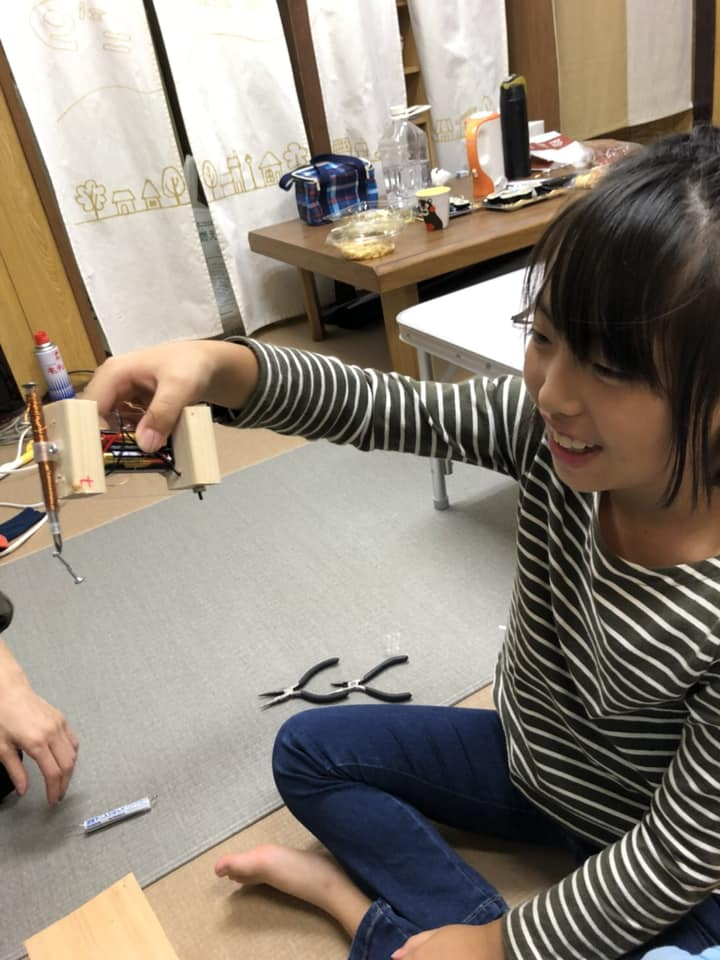

秋の空ってなんだかすがすがしいですよね
空を眺めていると、ふと思う。
空ってなんだ？
雲ってなんだ？
色があるぞ。
そもそも色ってなんだ？
空の色や雲の色、みんな科学です
子どものころに思う気持ち、忙しい毎日でなくなってしまう。。。
どこかの機会に夕焼けを作ってみようと思ってます！！
実験上手くいくかなぁ？


昨日はきれいなうろこ雲でした
なんか、味噌汁にこんな形見たことない？
そうなんです‼️
味噌汁とうろこ雲、同じ物理なんです
みんな味噌汁の中で暮らしてるんだね 笑
よく見れば、身の回りに学びはたくさん転がってる。
気づかないだけだね
日常に耳を澄まし、静かな心で観察してみよう
世界は思ったよりも素晴らしいはずだ
It's a wonderful world
今日は電磁石作りでした‼️
まずはコイル作り‼️
毎回そうだけど、このコイル作りが難関
からまったり、上手に巻けなかったりで諦める子も出てきたりして
だけどなんとか突破して、つぎからは穴あけのオンパレード
みんな電動ドライバーの穴あけ、上手くなったわ 笑
全然使えなかったとか、使ったことない子だったのに、上手く使えて、すごい成長だよ
穴あけはどの大きさのドリルでどの位置にどのくらいあけないといけないか事前に考えとかなきゃいけない。
今日は僕が指定せず、自分たちで相談してドリル選定できてたね
集中すれば集中するほど、部屋は汚くなっていく
頭のいい人は、実は部屋が汚いと聞いたことがある。例えば、本棚にきっちり整理された本の中では、端と端の本は出会うことはない。
だけど、部屋が汚く、散らかっていると、出会うはずのなかった本たちが出会う可能性が出てくる。出会うことで、また新たな違うアイデアが生まれる。
さぁ、次もたくさん遊んで、部屋を汚くしよう 笑


昨日は、ディズニーの、【プーと大人になった僕】 (ᵔᴥᵔ)という映画を家族で見に行きました
面白かったぁ〜、、、っていう感じより、
凄く考えさせられました。
大人になって失っていくもの、
子供の時にはあった心、、
なんだろう、、、僕も大人になってるから
忘れてるかもしれないけど、この映画を見て蘇ってきたこと、、、、
好奇心、ワクワク、頭で考えない、恐れない、時間を気にしない、バカになれる、
カッコつけない、深呼吸してる？ 眉間にシワ無い？ 我慢してない？ 笑ってる？心から
こんな気持ちを、大人は忘れてしまってると思う。
大事なのは、、、それを見て育っている子供達。
僕たち大人は、大人である責任、社会人とての責任を背負いつつ、、、でも、そちらに傾き過ぎて大切な心を置いてけぼりにしてる。
うーん、、、【バランス】、、、とっても難しいようで、簡単？ 簡単なようで難しい、、、。
映画の中の名セリフ、、、
【何がしたい？】
《うーん、『何もしないこと』がしたいかな》
monokotoは、子供達に、そんな大人になって欲しい。
そして僕たち大人も、今からでも遅くない、そんな子供大人になって、、、、
そんな振り切れた大人を見せてやりたい。
なんか、書いてたら、泣きそうになりました
ディズニーってなんか、大人になって、枯れかけた心の奥の方にある、わずかな泉の存在を気付かせてくれて、泣こうと思ってないのに、涙出てきたりするんだよなぁ。
大切なのはこの泉なんだろうね

今日は問題集選びに始まり、天秤作製&実験でした
monokotoは基本的にはものづくりに特化していますが、個々に勉強できる時間も大切にしていきたいと考えています
全てが楽しいことばかりでなく、例えば、少し難しい問題が解けたときの感動のように、困難さも重要です
興味をもってもらうために、まず、みんなで本屋さんに言って問題集を買いました
お店だったけど、ワーキャーいいながら、お気に入りの問題集をそれぞれが手にしました
帰ったあとは、天秤学習
精密な天秤を木工作でゼロから作製！！
同じ重りで釣り合ったときの感動
親さんも懐かしくなったようです 笑
分からない重りの重さを、物理法則にて予測‼️‼️
すげぇー、合ってるじゃん
トルクやモーメントと言った言葉で置き換えられるのだけれど、難しくない！要するに天秤
身の回りに数学や物理は潜んでいる
さぁ、次回も楽しもう


今日はお魚浮き子をやりました
今回は急遽、新しい友達が見学に来るということで、簡単にみんなでできる工作をと思い、monokotoスイッチからペットボトルお魚浮き子に変更
ペットボトルに魔法をかけると、中の浮き子が沈んだり浮いたり、、、
なんでー⁉️⁉️
まずはみんなで浮き子づくり！
この浮き子づくりがポイントで、なかなかうまく針金の重さと浮力の釣り合いがとれない
何回も何回も微調整していって、やっとできた‼️
ペットボトルに浮き子をいれ、力を入れると、、、
おぉー、できた‼️‼️
歓声があがる
新しく来た子も成功して、さらにライトアップでアレンジ
2000年以上前に、アルキメデスが発見したという浮力の原理。
こんな形で子どもたちを感動させることができる
時を超えて、なんて面白いんだ
次回も、偉人たちの肩の上に乗って、法則を遊びに変えちゃおう

今日はピタゴラスイッチならぬ、monokotoスイッチでした
みんなそれぞれに材料を駆使して自分なりの装置を作製
磁石をこうして、、、
レールにのせて、、、
動画を見ながら、"これ、すごくない⁉️"
ビー玉が飛び跳ねたり、レールから外れたりで、試行錯誤を繰り返しながら、作製しました‼️
もちろん、1回では終わらないので、来週いっぱいくらいを使ってmonokotoスイッチを作っていきます
部屋の汚さに比例して、子どもたちは解放されてクリエイティブになっていく
スタートからゴールまで、何とか走り切るぞ
次回も楽しもう
※番外編でゲームプログラミングも少し見せてみました
する側じゃなくて、作る側
少し難しいけど、ワクワクだ！
やってみよう


ついに、着火したぁあぁぁあぁ
みんなそれぞれに火起こし器を作製して、大切な火がついにつきました‼️‼️‼️
画像を見てください、すべてわかります‼️
みんなよく頑張った
ゼロから火をつくったよ
当たり前は当たり前じゃない。
身の回りのもの、すべて何か輝いたものがある。
その光に気づかないだけ。
さぁ、次の光を探そう
monokoto終了後の風景


今回は火起こし&バーベキューでした
バーベキューのために火起こしを自作して、挑戦しましたが、先日は着火したのに、ぜんぜん着火せず
大人も子供もみんなチャレンジするもことごとくダメで、何回か火種ができて着いたぁあって思っても、他のものに着火せず
たどり着いた境地は、、、
原始人はすごい 笑
それと、ライターなど、現代文明の力もすごい
そのあとは、みんな楽しくバーベキューをやって、テントで寝てみたり、走り回ったり
人類の英知を感じながら、楽しかったね 笑
また次回も楽しもう
 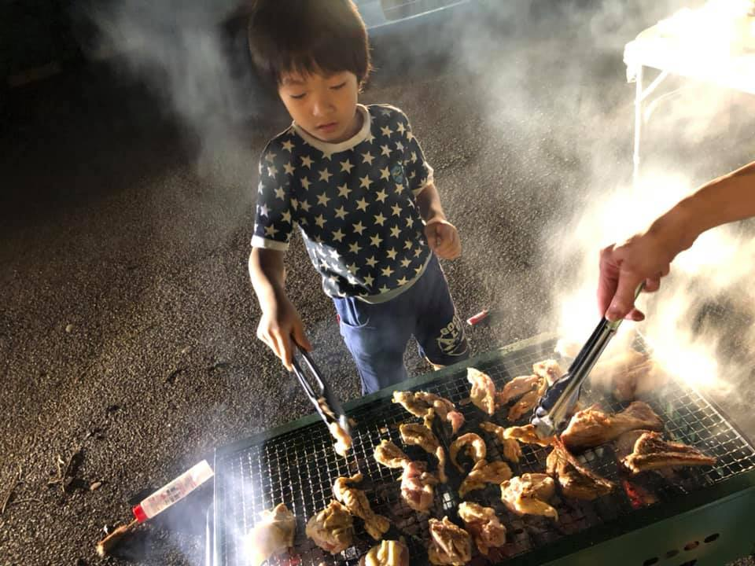
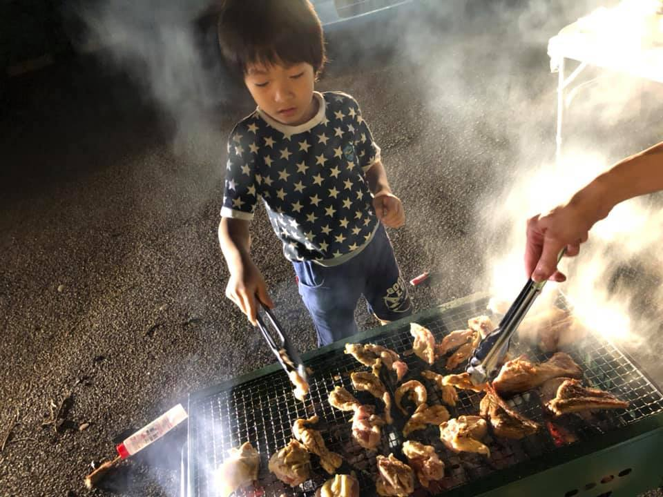
火起こし
アナログもデジタルも自然も人工も全てに意味がある。
どれがダメとかない。
子供たちには、全てに意味を感じてほしい。
無駄なものなどない
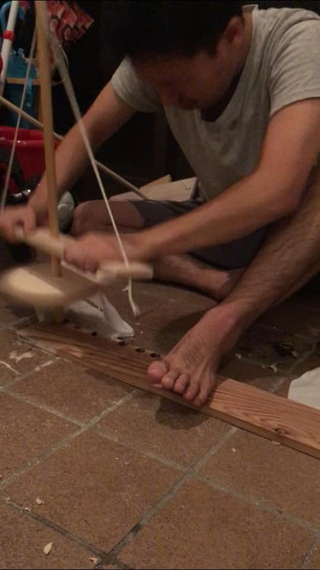
できるだけゼロから作る。
monokotoの大切な方針の一つ
これまでもたくさん工作してきたけど、どこかの機会にはプログラミングでゲームをゼロから作る予定です
少し簡単な試作を作ったので、お見せしますね


今回は工作ミニ四駆でした‼️
やっぱ動くクルマはみんな興味津々
まずは、タイヤ作製
タイヤの中心を出すために、図形の力を借りて、たったひとつの点だけど、これで30分くらい奮闘したね 笑
竹ぐしのシャフトを挿したら、ボディ作製
みんなそれぞれにボディ形状を決める、、、
プラスチック
スチロール
木材
紙
いろんな選択肢の中から、自分なりの形状に仕上げる
3Dプリンターで作製した大小さまざまなギヤをはめ込んで、モーターでタイヤを回してみる、、、
おぉ〜回ったぁ‼️‼️‼️
ギヤの噛み込みが悪くてなかなか回らないこともあったけど、改善、改善
細かいところを仕上げて、さぁ、初走行‼️‼️‼️
走ったぁあぁぁ
走った瞬間のあの表情
いろんな壁があったけど、世界で一つのonly oneなミニ四駆が、目の前で命を吹き込まれたように走る✨
これってすごい体験なんだよ
最後まで上手く走らなかった子もいたけど、またチャレンジすればいい
チャレンジして、チャレンジして、失敗しても、その壁が高ければ高いほど、登ったとき、気持ちいい
さぁ、次回も壁を乗り越えよう


今回は、スピーカー作りでした‼️‼️
まずはコイル巻きから！
磁場の発生のためには、キレイに巻くことが大切
電池にキレイに巻こうとするけど、なかなか上手くいかない、すぐほどけたり、電池から取り外すときにバラバラになったり
このコイル巻きでかなり労力を使いきり、みんなクタクタ 笑
次に紙コップや磁石を取り付け、木材で支えを作製
のこぎりに悪戦苦闘したり、丸ノコの便利さに圧倒されたり
そしていざ、鳴るかテスト
プレーヤーに接続して、耳を近づけて、、、
おぉおぉぉ〜、聞こえるぅうぅ‼️‼️‼️‼️
なんでもない簡単な構造。
だけどその中に奥深い物理が潜んでいる。
音ってなんだ？
磁石ってなんだ？
電気ってなんだ？
、、、
そんな根本的なことを感じることができたね
なんでもないことだと思えても、まだまだ本当の意味では理解できてない。
さぁ、次も本質を探そう

看板作り
"monokoto"の文字ができました
木のぬくもりがあっていい感じ

今日も暴れたね 笑
今日は、主に分解でした
これどうなってるんだろ？
壊してみよー 笑
うぅ、なかなか開かない
僕がやるー
あっ！開いた‼️‼️
扇風機、イヤホン、走るおもちゃ、液晶、時計、電卓、、
たくさん分解したね
みんな、好奇心むき出しで、集中
壊してるんだけど、たくさんの気づきがあって、壊せば壊すほど、何かを生み出してる感じ
ただただ、そのままの好奇心で大人なってほしい
そのためにmonkotoは全力でサポートするよ
さぁ、次回もその無限大の好奇心で、暴れよう


集中しすぎて、集中が切れたね 笑
今日は、飛行機の続き&モーター作製
飛行機の微調整が難しい
まっすぐして、、、
この長さで、、、、
これくらい曲げて、、、、
作製中は、みんな無言に近かった 笑
なかなか難しかったけど、なんとかみんな飛行機を作り終えて、パタパタ飛ばすことができたね
次にモーター！
モーターも、また、難しい、、、
ちゃんと回っていくには、微調整がいる
自然はそんなに甘くない
ちょっとした曲がりだったり、角度だったりが、すぐ影響して回らなかったり
改良、改良を重ねて、それでもくるくる回るようになったね
小さなことを一つ一つ大切にして、何かを作りあげる。
どんな場面でも大切な考え方。
初めは難しいのだけど、我慢して頑張った先に到達できる気持ちがある。
monkotoは、人生の縮図でありたいと思っています。
みんなが社会に出る前に、どれだけ生きる力の源となる"好奇心"を育めるか。
さぁ、次も壁を越えるぞ
※カイちゃん、来てくれてありがとう


飛んだぁあぁ 笑
今日は、鳥のように動く竹ひご飛行機を作製しました
3Dプリンターで作製した駆動部部品と竹ひごを使って、まず機体と主翼づくり
飛ぶためには、いろんなとこが真っ直ぐだったり、平行だったりしないといけない。
つまり、一つ一つの部品を集中しながら、精巧に作り上げる。
あぁ、曲がった
おぉ〜、ちょー真っ直ぐ
一喜一憂しながら、次は主翼。
みんなそれぞれにオリジナルな主翼を切り出し、作製していく。
主翼をつけたあと、駆動部が動くかチェック！
あれ、動かない
これをこうして、、、
おぉ、パタパタ動いたぁあぁ
みな歓声をあげて、驚く
最高の雰囲気
次に尾翼を作製し、取り付け、さぁ、初飛行‼️‼️
いくよー‼️
、、、、
、、、、
飛んだぁあぁぁ
自分が一つ一つ集中して作った、オリジナル飛行機。
それが鳥のように、生きているように飛ぶ
人間は鳥のように飛べないけど、頭を使って、道具を考案し、飛ぶことができる。
あのライト兄弟も、飛んだ瞬間は同じように思い感動したはず。
人類の英知を感じながら、でも遊なのだけれど、ただの遊びじゃない。
ゼロから作り出す喜び。
ものが豊かな時代だからこそ、今の子供たちには感じてほしい。
いつかその育んだ心が、君を助けてくれると信じて
また次回も飛行機の続きだね
楽しもう
今日は大変だったかな 笑
金属探知機の続き。
最難関の電子回路組み付け
線がたくさんで頭がこんがらがる
配線の皮むきがうまくできず、芯線まで切れる
半田付けをしたはいいけど、うまくできてなくて切れる
いやー、戦ったね
数人は最後まで完成して、金属探知成功
だけど、動作が不安定だったりするけどね 笑
ブザーが探知して反応したときのあの感動
頑張った甲斐があるよね
工作は、失敗も含めて工作の面白み
失敗するから成功する
初めから成功ばかりじゃ、単調すぎて面白くない
次回は鳥のように羽ばたく飛行機を作製するぞー‼️
少し飛ばして見せたけど、みんなヤバイくらい目が輝いてた 笑
次はどんな展開になるか
Let's make it happen
今日も格闘しました 笑
今日は、金属探知機を作成しました！！
難易度高めでしたが、それぞれに頭をひねりながら作製しました
まずはアクリルに穴あけ
あぁあー、穴がずれた‼️
マジかよー
そして、コイルまき
みんな無言でコイルを綺麗に巻くのに必死 笑
コイルが金属探知機で最重要だと聞いて、巻き直しをしたり、しっかり整列するように考えたり、、、
なかなか根性がいる作製でしたが、そこまでみんなやり遂げました
今日は最後まで辿り着けなかったけれど、それもOK
一生懸命なんとか仕上げたいという気持ちが伝わるmonokotoでした
こんな雰囲気が日常になれば、子供達の成長は計り知れません
次はお盆明け、再来週から再開です
遊びながら、また学ぼう
しばらくお休みだけど、いい夏休みを過ごしてね
今回もヘトヘトです 笑
重曹をテーマに、爆発実験
重曹は様々なことに利用されていますが、科学的には面白くて、その中で二酸化炭素を発生する性質に注目し、まずお酢と反応させました
ペットボトルにお酢を入れたあと、風船をかぶせ、その風船には重曹が入っているので、、、
どんどん膨らんでいって、、、
ドーン!!
とはいきませんでしたが 笑
"ヤバイ！ ヤバイ！ ヤバイ！！"
みんな興奮してました 笑
その後は、重曹をテーマにパンづくり
料理も科学なんだな
電極をつけた電気パンに電流を流すとみるみるうちに膨らんでいきます👌
食べると、、、、
うまい‼️‼️‼️
次は、竹でバームクーヘン風に何度も重ねてパンづくり
焚き火の熱さに格闘しながら、それぞれに、美味しいバームクーヘンを作っていました
また、次回も楽しもう
今回も暴れました 笑
蒸気で動くポンポン船を作りました！！
みんなに見せた瞬間、、、
えぇーなんで動くの⁈
動いたぁあぁ
触ると、パイプから水が出たり入ったり！
じゃぁ、みんなで作ろう
パイプを曲げるのが難しかったり、曲げたはいいけど、取り外せなかったりでハプニングや失敗もあったけど、それも工作の醍醐味
次に簡易のプールを作って、いざ着火
動いたぁあぁあぁ〜
くるくる回ったり、まっすぐ進んだり
家に入って試験管でのラボ実験
試験管の中の水が出たり入ったり、動いてるのを確認し、物理を説明
途中、試験管が飛んでいくハプニングもあったけど、これも実験の醍醐味
危険なこともきちんと把握しておく必要性も一緒に学んだね
大気圧の物理から、次に空き缶潰しに挑戦
手で触らず空き缶を潰す！
空き缶を熱したあと、水の中にいれる
グシャグシャ！瞬時に潰れた
怖がるかなぁと思ったら、やりたぁーい！って言ってくれて、嬉しかったな
今日実施した実験は、全部同じ物理（monokoto）なんだ！
違ってみえるけど、実は同じ
面白いね
"物事には本質がある"
monokotoでは、みんなに見えない本質を感じてもらいたい
次回も暴れよう！！！！！
今日もヘトヘトに暴れました 笑
新しい子も加わって、みんな少しテンション高め、自信もついてきていい感じ
今日は、約100年前にエジソンが発明した電球フィラメント作りから始まり
焚き火台に火をおこして、、、
わぁー火が消えるー
あっちぃー
火に大騒ぎして、焚き火の物理を説明後、なんとか火をおこして、フィラメント作り開始
ただの竹だったのに、金属のような音に変わり、結晶化成功
電源装置にて、電気をかけると、、、、
ピッカー
光ったぁあぁぁ‼️‼️‼️
なぜ光るのか、炭とは何か、もっと説明したかったけど、そんな暇なく、次は、べっこう飴づくりへ 笑
これもある意味結晶化なんだけど、アモルファスと呼ばれる構造なんだ
近いのがガラスかなぁ〜
それから、火星大接近のため、天体観測へ
monokotoの活動からくる雰囲気は最高‼️
大人も子供も科学の好奇心だらけの空間で、大騒ぎ
火星や月、木星やアンタレスなど、宇宙の神秘に酔いしれました
星の輝きは実は炭火の光と同じ物理だなんて、なんて面白いんだ
新しい子も初めは緊張気味だったけど、最後には、
また行きたぁーい‼️‼️
って言ってくれて
ありがとう
学びなんて、身の回りに転がってる。
そして、それは遊びの中ですんなり心の中に入ってくる。
大人も子供も、遊び、そして学ぶ。
前の自分より少しだけ心が豊かになっていく。
さぁ、次回もやってやろう‼️
Let's make it happen
この月末に火星が地球に最接近するそうです
約400年前にガリレオが人類で初めて天体観測に成功しました。
月は完全無欠の球形ではなく、地球同様、凹凸がある。
その当時では宗教上、考えられない発見でした。
ですから、ガリレオの喜び、驚きは計り知れなかったと思います
まだまだ分かっていない宇宙について、子供たちには、時を超えてガリレオのように大志を抱いてほしいと切に願っています
写真は先日観測した月です！
いやぁ〜、今日も大暴れだったね 笑
まずは光るスライム作り
分量を間違えないように慎重に作って、光る種を入れて、ほう砂を加えると、、、
わぁー固まってきた！！
おぉーーーーー
今回はただのスライムじゃなくて、光エネルギーを与えてやる！
光ったーーーーーー
やべぇーーーーーー
スライムも合間に、爆発ロケットを仕掛ける
3.2.1....着火
どーーーん！！！！
紙コップロケットがびっくりするような勢い
外でも大騒ぎで実験して、なんで、なんでと考えました
また、スライム作りからスーパーボールを取り出す実験も行って、分子の変化で遊びました！！
いろんな実験が終わったあと、少し難しかったけど、みんなで、その原理を考えました
色ってなんだ？
爆発ってなんだ？
分子ってなんだ？
そもそも、物ってなんだ？
いつも当たり前に思っていること、見過ごしていること、深く考えれば、当たり前じゃなくなってくる。不思議だよね。
その純粋な好奇心をもったまま、大人なろう！
その好奇心がきっとみんなを助けてくれるから
そんなワクワクは、実は身の回りにいっぱいあるんだよね
さぁ、次回も遊びながら考えよう
※きんちゃん、他の写真UPおねがーい
今日もよく暴れたねー 笑
ブザーを使った自分だけの"イライラ棒"
どんな形にしよう
ここがくるくるしててー
すごいぐらぐらする、支えるにはどうしたらいいかなぁー
よし！この形でいこう！
金の形をきめるだけで、2時間が終わりそうになったり、、、
半田付けに悪戦苦闘したり、、、
そうかと思えば、外では、前人未到の-10度極低温づくりが始まっていて、凍らない水を体験しました
それと、3Dプリンターで、初めてモデリングした世界でたったひとつの車を、本当に嬉しそうににぎりしめる場面にも出会えました
いつも思うけど、子供たちの前では、やっぱり理屈よりも感動が大事
もちろん、理屈も大切だし、理屈を知ることで得られる面白さ、感動もあるのだけれど、シンプルに感動できるだけで、良いときもある
本当の成長って、やっぱり時間かかるんだよね。
それを大人がドッシリと構えて待ってやれるかどうか。もちろん、進捗を求めて焦ったりするんだけれど
monokotoでは、そんな科学の芽が生えるのを、ただただ待ってやりたい。
さぁ、次も大暴れしよう
※きんちゃん、他の写真UPおねがーい
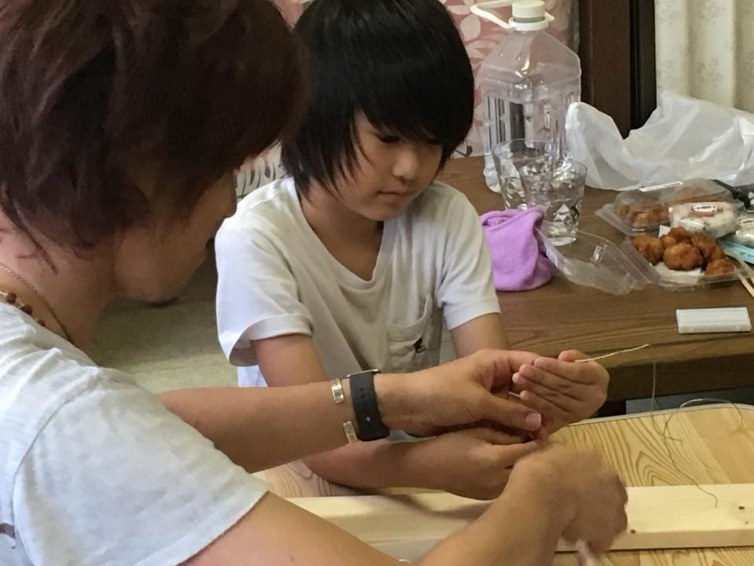今回は、"地球の大きさを測ろう！"
みんなで外へ出て、メジャーで一生懸命、距離を測りました
帰ってからは、計算地獄でしたが、知恵熱を出しながら、みんなで格闘しました！！
出た答えは地球の円周4万キロ
合ってんじゃん！正解
地球の大きさを実験して測るなんて、すごいね
計算は難しかったかもしれないけれど、計算の大切さは、実はより具体的なること、つまり、さらに面白くできるということにあるんだよ
だって、計算したから、地球を一周歩くのに1年以上かかることがわかって、地球の大きさをより身近に感じることができたよね
また来週も遊びながら、格闘しながら、学んでいこう
※きんちゃん、他の写真UPおねがーい
わたがし機、作成成功！！
白いわたがしがめっちゃ出てきたね 笑
わたがし機なんて買ったらすぐ使えるんだけど、作っちゃたよ
自分で作ったわたがし機から出るわたがしは格別に美味しいなぁ〜
また遊ぼう
※きんちゃん、他の写真UPおねがーい
今日も楽しかったね！
大人も子どもも一緒になって、科学の楽しさを共有する、そんな、ほんわか優しい空間
氷なんて、どこにでもある。
だけど、よく考えてみるとこんなに楽しいものはない！
氷を作ってるだけだけど、なんでこんなに楽しいんだろ
ほんとは何でも楽しいんだよね！
気づいてないだけなんだ
次も楽しく学んで、あそぼー
きんちゃん、他の写真UPおねがーい！
ついに始まりました！
"もののことわり"をものづくりから体感する
monokotoの精神で遊び、そして、学びました
今日の目玉は3Dプリンターかな